En serie
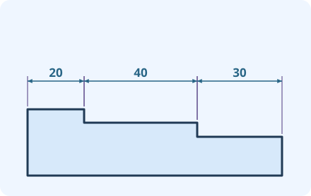
Cada cota empieza donde termina la anterior. La longitud total es 20 + 40 + 30 = 90 mm.
Tecnología y Digitalización · 1.º y 3.º de ESO
Indica las medidas reales de una pieza para que se pueda interpretar y fabricar a partir de su plano.
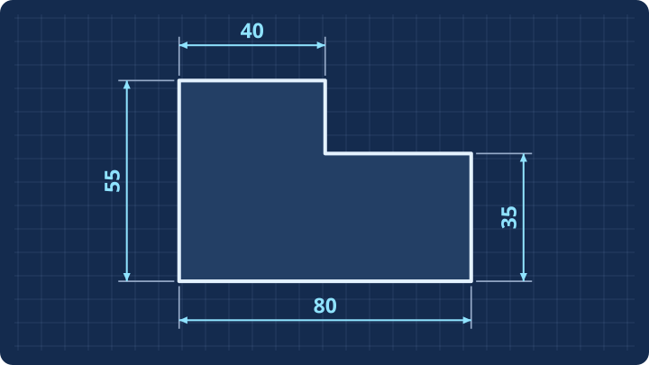
Acotar consiste en indicar en un dibujo técnico las dimensiones reales de un objeto mediante líneas, cifras y símbolos normalizados. Una cota es cada una de las medidas que se anotan.
Un plano acotado contiene la información necesaria para interpretar y fabricar la pieza sin medir directamente sobre el papel.
La cifra de cota expresa siempre la medida real. Un lado de 60 mm se acota con 60 aunque el dibujo esté a escala 2:1 y el lado mida 120 mm sobre el papel.
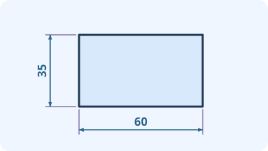
El grosor y el trazado indican la función de cada línea. Las líneas de cota y las auxiliares se dibujan más finas que el contorno.
| Trazo | Tipo de línea | Uso |
|---|---|---|
| Continua gruesa | Contornos y aristas visibles | |
| Continua fina | Líneas de cota y líneas auxiliares | |
| Discontinua fina | Contornos y aristas ocultos | |
| Fina de trazo y punto | Ejes y centros de simetría |
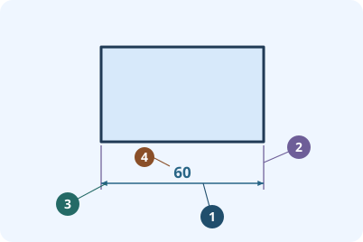
Las separaciones son orientativas para los ejercicios de clase. Cuando todas las cotas lineales están en milímetros, se escribe la cifra sin «mm».
Da cada medida una sola vez. Coloca la cota donde se entienda mejor.
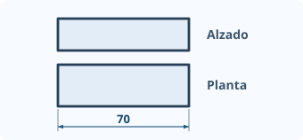
Coloca las cotas preferentemente fuera de la pieza. Así el contorno queda despejado.
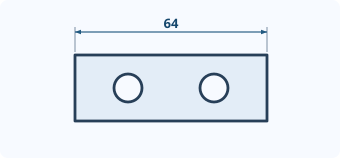
Acerca las cotas parciales al contorno. Cuando hay varias cotas paralelas en la misma zona, las totales quedan más alejadas.
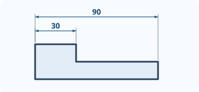
Evita cruces. Ordena las cotas para que sus líneas queden libres de cruces con otras líneas de cota y, si es posible, con las auxiliares.
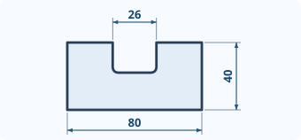
Traza líneas de cota independientes. Desplázalas respecto a las aristas del dibujo.
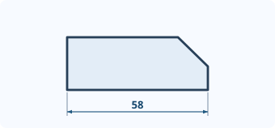
Incluye todas las dimensiones necesarias. Deben quedar definidos el tamaño y la posición de los detalles.
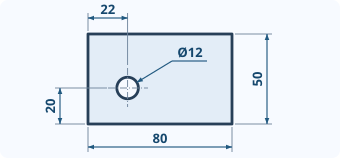
Usa una misma unidad para las dimensiones lineales. En clase usamos milímetros. Los ángulos llevan el símbolo de grado.
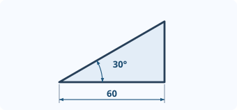
Elige la vista más representativa. Reparte las cotas entre alzado, planta y perfil según dónde se vea mejor cada detalle. Evita acotar sobre aristas ocultas.
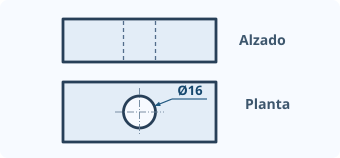
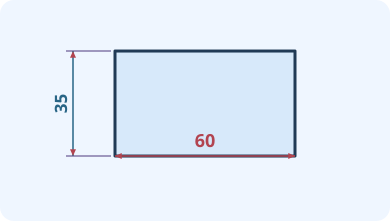
| Medida | Correcto | Incorrecto |
|---|---|---|
| 50 milímetros | 50 | 50 mm |
| 3 centímetros | 30 | 3 cm |
| 1 decímetro | 100 | 10 cm |
| 45 grados | 45° | 45 |
La misma pieza puede definirse de distintas maneras según la referencia que se quiera utilizar.

Cada cota empieza donde termina la anterior. La longitud total es 20 + 40 + 30 = 90 mm.
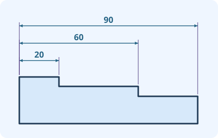
Todas las cotas parten de un mismo origen y se escalonan. Se lee directamente la posición de cada escalón respecto al extremo izquierdo.
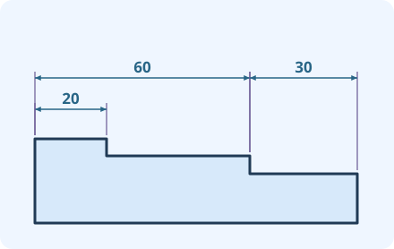
Combina los dos sistemas. Las cotas de 20 y 60 comparten origen. El último tramo mide 30 y permite deducir el total.
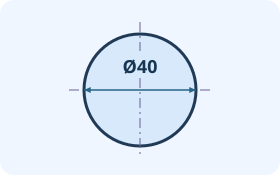
Se escribe Ø delante de la cifra, por ejemplo Ø40. Cuando la línea de cota atraviesa la circunferencia, pasa por su centro.
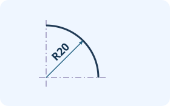
Se escribe R delante de la cifra. Una sola flecha señala el arco. Como regla general, los arcos de hasta 180° se acotan por su radio. Para circunferencias y arcos mayores suele indicarse el diámetro.
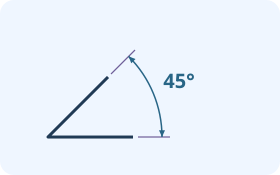
Se dibuja una línea de cota curva con centro en el vértice y se expresa la cifra en grados, por ejemplo 45°.
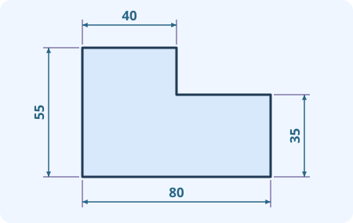
La longitud del tramo derecho se deduce al restar 80 − 40 = 40 mm. El desnivel entre los dos escalones es 55 − 35 = 20 mm. Basta con las cuatro cotas del dibujo.
Responde a las ocho preguntas y comprueba tus respuestas.
| Elemento | Convención |
|---|---|
| Línea de cota | Continua fina y paralela a la dimensión. |
| Líneas auxiliares | Continuas finas y generalmente perpendiculares a la cota. |
| Separaciones orientativas | 8–10 mm desde el contorno hasta la primera cota, 5 mm entre cotas y 2 mm de prolongación de las auxiliares. |
| Flechas y cifras | Flechas pequeñas y uniformes. Cifras centradas y separadas de las líneas. |
| Unidades | Milímetros sin el símbolo «mm» en los ejercicios. Grados con ° para ángulos. |
| Símbolos | Ø para diámetros y R para radios. |
Una pieza está completamente acotada cuando se puede interpretar y construir a partir de las cifras del plano.
Dibuja el alzado, la planta y el perfil de una figura en Proyectar. Abre las vistas guardadas en la Mesa de dibujo 2D para acotarlas.